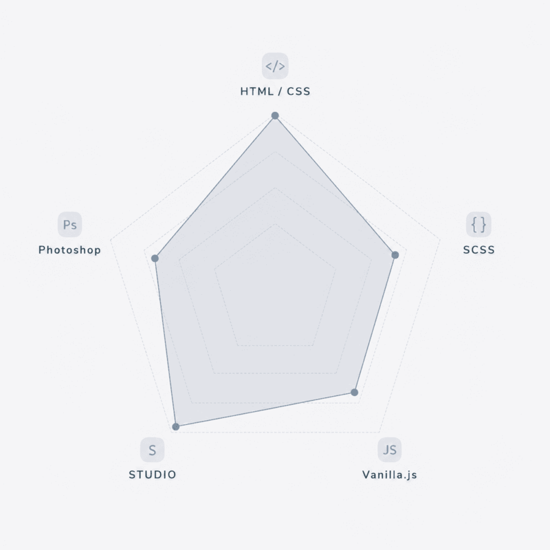
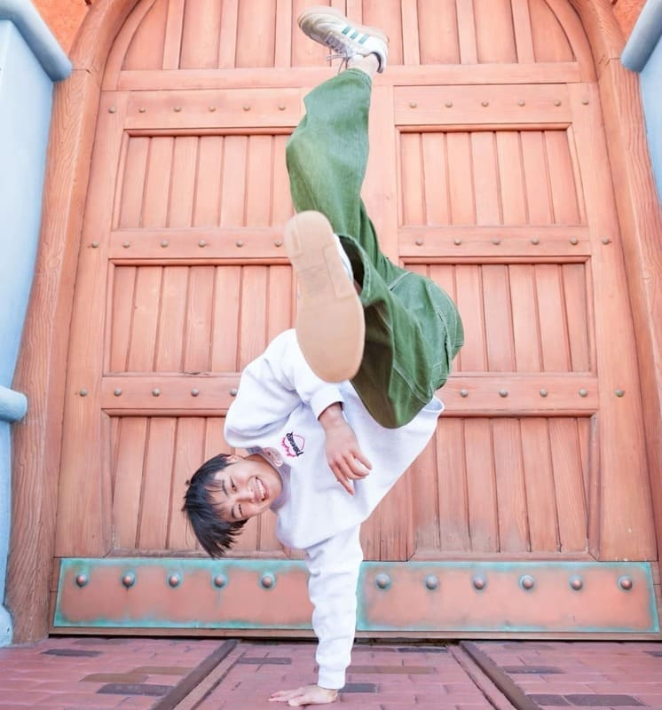

- 実案件
- STUDIO制作
Dance Studio elle様
静岡県沼津市にあるダンススタジオのHPを制作いたしました。
Shizuoka Numazu
SHUN TAKAMA
Portfolio Site
WORKS
静岡県沼津市にあるダンススタジオのHPを制作いたしました。

職業訓練校でおこなった制作課題。 ワイヤーフレームからコーディングまで一通りの工程を学びました。

自身のポートフォリオサイト制作をおこないました。

メンタリングサービス「Hello Mentor」の課題として制作。 デザインカンプをもとにHTML/CSSで実装しました。

メンタリングサービス「Hello Mentor」の課題として制作。 デザインカンプをもとにHTML/CSSで実装しました。

メンタリングサービス「Hello Mentor」の課題として制作。 デザインカンプをもとにHTML/CSSで実装しました。
SKILLS
これまでの学習のなかで理解したスキルや、
力を入れたスキルについてまとめました。

セマンティックなHTMLを意識し、BEMを用いた保守性の高いCSS設計やレスポンシブ対応をおこないます。 ※CSS数学関数、CSSアニメーション継続学習中。
ネスト構造やmixinなどの基礎知識を用いたマークアップをおこないます。 ※より高度な操作が扱えるよう継続学習中
ハンバーガーメニューやスライダーなどの基礎実装をおこないます。 ※より高度な操作が扱えるよう継続学習中
「STUDIO」を活用したWebサイト制作をおこないます。
トリミングやリサイズ、色調補正などの基礎操作をおこないます。 ※より高度な操作が扱えるよう継続学習中
図形やテキストの配置、レイヤー概念などの基礎操作や基礎知識を学習。
配色や余白、視線設計などを学習中。
GitHubを用いたソースコード管理を学習中
PROFILE
SHUN TAKAMA
大学卒業後、ゲストハウスでのホテルスタッフ、印刷会社での企画営業の2社を経験しました。 2025年に長年お世話になっているダンススタジオのWebサイトを制作しました。 その際に想いや特徴などの無形のものがデザインとして形に残り、その先に新たな出会いが繋がるWebの力に大きなやりがいを感じ、転職を決意しました。 2026年2月から職業訓練校に通い、外部メンタリングサービスも活用しながらより実践的にWeb制作を学んでいます。 これまでの経験で培った“寄り添い力”を武器に技術面だけでなく、相手の想いや課題に寄り添い、一緒により良い形を考えることができる制作者を目指しています。
